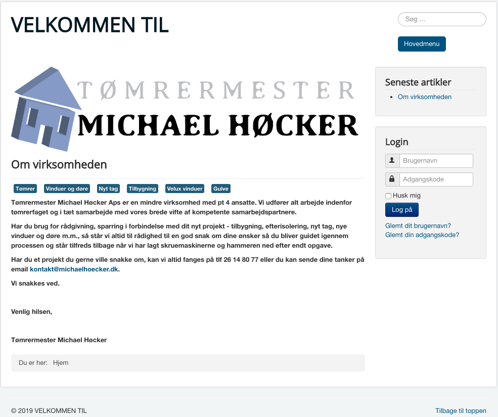

Opgaver for uge 10
Du skal vurdere website's design ud fra følgende:
Jeg har samlet vurderingen af hjemmesiden Tømrermester Michael Höcker i et dokument. Det kan hentes som pdf her
Din opgave er at komme med et forslag til minimum 2 sider med ens brug af grids. Hver af de redesignede sider skal uploades til din portfolio - enten som håndtegnede sketches, wireframes eller endnu bedre som digitale mock-ups.
Med udgangspunkt i den samme hjemmeside, som jeg lavede en vurdering af i opgave 1, har jeg lavet et design af forsiden og en side som omhandler gulve. Begge sider er opbygget omkring et grid med 12 kolonner.
Det er lavet i Adobe XD og filen kan hentes her
Nedenstående viser hjemmesidens forside som den er i dag. De underliggende sider der vises ved klik på navigations knapper kan vises, men der er ikke relevant indhold på nogle af dem.
Ved design af de 2 sider, har jeg benyttet et 12 kolonne's grid. Ved placering af de enkelte elementer, har jeg for så vidt muligt afpasset med de justrerer sig til at være indenfor kolonnerne.
Ligeledes har jeg prøvet at benytte mig af "Reglen om tredjedele". Siden deles op i et grid med 3 rækker og 3 kolonner. Efterfølgende placeres ens elementer, der hvor linierne krydser.